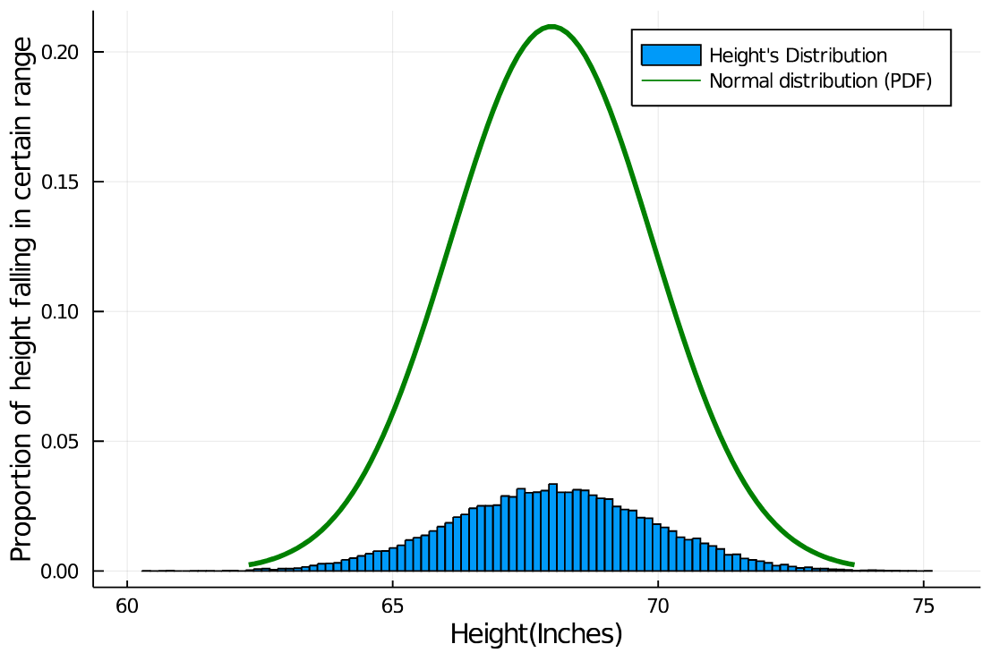

Gaussian Distribution Implementation 
Now let's see a real life example for Gaussian Distribution and implement it in Julia. Here we use a dataset containing
\(25,000\)
record of human heights(inches) and weights(pounds).
Download ⬇ (Source http://wiki.stat.ucla.edu/socr/index.php/SOCR_Data_Dinov_020108_HeightsWeights.)
Here we will study how height(inches) is distributed. And you should try to study the distribution of weights(pounds).
So let's get started.
First get the data Download ⬇ (Source).
Now load this data in julia.
using DataFrames, CSV, Plots, StatsBase, Statistics, Distributions, Random
population = CSV.read("height_weight.csv", DataFrame) # [Download ⬇](../height_weight.csv)
first(population, 6)

Now extract all the Heights from the data.
population_height = population."Height(Inches)"
population_height[1:5]

Now let's plot a histogram out of population_height.
num_bins = 100
# Histogram(PMF) of Heights
bins = Array(LinRange(minimum(population_height), maximum(population_height), num_bins))
counts = fit(Histogram, population_height, bins).weights
Plots.histogram(population_height,
bins=bins,
weights=(1/sum(counts)).*ones(length(population_height)),
title = "Height's Distribution",
label = false)
Plots.xlabel!("Height(Inches)")
Plots.ylabel!("Proportion of height falling in certain range")
 Histogram looks to be normally distributed. Now let's visually inspect that, does our data follows a Normal Distribution (with empirical mean and empirical variance)?
Histogram looks to be normally distributed. Now let's visually inspect that, does our data follows a Normal Distribution (with empirical mean and empirical variance)? So, how can we visually inspect our data to be normally distributed?
One can say that we should impose a Normal Distribution with empirical mean and empirical variance on the height's histogram and see if our data follows a Normal Distribution.
The height of histogram denotes the probability of a height falling into certain range, but the height of a Normal Distribution does not denote probability. So we can't get any info by imposing a Normal Distribution on our histogram.Let's impose a Normal Distribution on our histogram and see it ourselves.

Code to plot this (julia)
num_bins = 100
# Histogram(PMF) of Heights
bins = Array(LinRange(minimum(population_height), maximum(population_height), num_bins))
counts = fit(Histogram, population_height, bins).weights
Plots.histogram(population_height,
bins=bins,
weights=(1/sum(counts)).*ones(length(population_height)),
label = "Height's Distribution")
# PDF of Normal Distribution
_mean, _std = mean(population_height), std(population_height)
rvs = LinRange(_mean - 3 * _std, _mean + 3 * _std, 100)
_pdf = pdf.(Normal(_mean, _std), rvs)
plot!(rvs, _pdf, c="green", label="Normal distribution (PDF)", lw=3)
Plots.xlabel!("Height(Inches)")
Plots.ylabel!("Proportion of height falling in certain range \n PDF of Normal distribution")
Ok we get that, we can't use PDF to visually justify the normal trend of our data, then what can we use to justify that our data follow a Normal distribution.
And the answer is CDF, CDF of Normal distribution and Height's distribution both denote the same thing. So we can overlay CDF of Normal distribution and CDF of Height's distribution on each other, and see if both CDF overlay nicely.So let's plot it,
num_bins = 100
# CDF of Heights
bins = Array(LinRange(minimum(population_height), maximum(population_height), num_bins))
counts = fit(Histogram, population_height, bins).weights
_cdf = cumsum(counts)/sum(counts)
pop!(bins)
scatter(bins, _cdf, color="blue", markersize=2, label="Height's distribution CDF")
# CDF of Normal Distribution
_mean, _std = mean(population_height), std(population_height)
rvs = LinRange(_mean - 4 * _std, _mean + 4 * _std, 100)
_cdf = cdf.(Normal(_mean, _std), rvs)
plot!(rvs, _cdf, c="green", label="Normal distribution CDF", lw=3)
Plots.xlabel!("Height(Inches)")
Plots.ylabel!("CDF of Height's distribution \n CDF of Normal Distribution")
plot!(legend=:topleft)
 Now we can say that our data do follow Normal Distribution (with empirical mean and empirical variance).
Now we can say that our data do follow Normal Distribution (with empirical mean and empirical variance). Now Let's answer some questions
First let's get the empirical mean and empirical variance because we will need then below.O/P:using Statistics, DataFrames, CSV population = CSV.read("height_weight.csv", DataFrame) population_height = population."Height(Inches)" _mean, _var = mean(population_height), var(population_height) println(""" Empirical Mean: $_mean Empirical Variance: $_var """)Empirical Mean: 67.99311359679979So
Empirical Variance: 3.6162374935681028\(\quad\widehat{\mu}=67.9931,\quad\)\(\widehat{\sigma^2}=3.6162\quad\)also\(\quad\widehat{\sigma}=1.9016\)
Question \(1\)
What is the probability of randomly selected human is taller then \(67.12\)
inches? Say
\(X\)
is a random variable denoting height, then we want to find the probability of \(X\gt 67.12\)
or say \(\mathbb{P}(X\gt 67.12)\)
↪ Finding
\(\mathbb{P}(X\gt 67.12)\)
using mathematics We are pretty confident that our height data follows a Normal Distribution.↪ Finding
So we can say that\(X\sim\mathcal{N}(\widehat{\mu},\widehat{\sigma^2})\), where\(\widehat{\mu}\)is empirical mean and\(\widehat{\sigma^2}\)is empirical variance.
\[X\sim\mathcal{N}(\widehat{\mu},\widehat{\sigma^2})\]\[X - \widehat{\mu} \sim\mathcal{N}(0,\widehat{\sigma^2})\]\[\displaystyle\frac{X - \widehat{\mu}}{\widehat{\sigma}} \sim\mathcal{N}(0,1)\]So,\[\mathbb{P}\left(X\gt 67.12\right) = 1- \mathbb{P}\left(X\leq 67.12\right)\]\[\mathbb{P}\left(X\gt 67.12\right) = 1- \mathbb{P}\left(\underbrace{\frac{X - \widehat{\mu}}{\widehat{\sigma}}}_{\sim\mathcal{N}(0,1)} \leq \frac{67.12 - \widehat{\mu}}{\widehat{\sigma}}\right)\]\[\mathbb{P}\left(X\gt 67.12\right) = 1- \Phi\left(\frac{67.12 - \widehat{\mu}}{\widehat{\sigma}}\right)\]\[\mathbb{P}\left(X\gt 67.12\right) = 1- \Phi\left(\frac{67.12 - 67.9931}{1.9016}\right)\]\[\mathbb{P}\left(X\gt 67.12\right) = 1- \underbrace{\Phi\left(-0.4591\right)}_{1-\Phi(0.4591)}\]\[\mathbb{P}\left(X\gt 67.12\right) = \Phi(0.4591)\]\[\mathbb{P}\left(X\gt 67.12\right) = 0.67724\]
\(\mathbb{P}(X\gt 67.12)\)
using Both values are pretty close, there's a error ofO/P:result = sum(population_height .> 67.12)/length(population_height) print("Proportion of heights greater then 67.12 inches: $result")Proportion of heights greater then\(67.12\)inches:\(0.67784\)
\(\approx 0.9\%\)
. Question \(2\)
What is the probability that a randomly selected human has a height between \(59.25\)
and \(67.12\)
inches? Say
\(X\)
is a random variable denoting height, then we want to find the probability of \(59.25 \lt X\lt 67.12\)
or say \(\mathbb{P}(59.25 \lt X\lt 67.12)\)
↪ Finding
\(\mathbb{P}(59.25 \lt X\lt 67.12)\)
using mathematics ↪ Finding\[\mathbb{P}(59.25 \lt X\lt 67.12) = \mathbb{P}\left(\frac{59.25 - \hat{\mu}}{\hat{\sigma}} \lt \frac{X - \hat{\mu}}{\hat{\sigma}}\lt \frac{67.12 - \hat{\mu}}{\hat{\sigma}}\right) \]\[\mathbb{P}(59.25 \lt X\lt 67.12) = \mathbb{P}\left(\frac{59.25 - 67.9931}{1.9016} \lt \underbrace{\frac{X - \hat{\mu}}{\hat{\sigma}}}_{\sim\mathcal{N}(0,1)} \lt \frac{67.12 - 67.9931}{1.9016}\right) \]\[\mathbb{P}(59.25 \lt X\lt 67.12) = \mathbb{P}\left(-4.6 \lt Z \lt -0.46 \right) \]\[\mathbb{P}(59.25 \lt X\lt 67.12) = 1 - \left(\mathbb{P}\left(Z \lt -4.6 \right) + \mathbb{P}\left(Z \gt -0.46 \right)\right) \]\[\mathbb{P}(59.25 \lt X\lt 67.12) = 1 - \left(\mathbb{P}\left(Z \lt -4.6 \right) + \mathbb{P}\left(Z \lt 0.46 \right)\right) \]\[\mathbb{P}(59.25 \lt X\lt 67.12) = 1 - \left(1 - \mathbb{P}\left(Z \lt 4.6 \right) + \mathbb{P}\left(Z \lt 0.46 \right)\right) \]\[\mathbb{P}(59.25 \lt X\lt 67.12) = \mathbb{P}\left(Z \lt 4.6 \right) - \mathbb{P}\left(Z \lt 0.46 \right) \]\[\mathbb{P}(59.25 \lt X\lt 67.12) = 0.999998 - 0.677242 = 0.322756 \]
\(\mathbb{P}(59.25 \lt X\lt 67.12)\)
using Both values are pretty close, there's a error ofO/P:result = sum((population_height .> 59.25) .& (population_height .< 67.12))/length(population_height) print("Proportion of heights in between 59.25 and 67.12 inches: $result")Proportion of heights in between\(59.25\)and\(67.12\)inches:\(0.32216\)
\(\approx 0.19\%\)
.